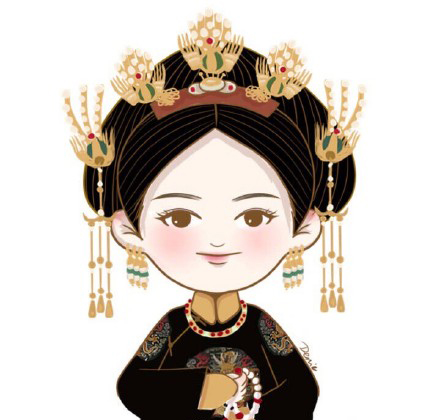

- 魏瓔珞(令妃) 演員：吳謹言
- 歷史原型：孝儀純皇后魏佳氏
- 經歷：繡坊繡女→長春宮掌事宮女→辛者庫宮女→長春宮掌事宮女→圓明園宮女→魏貴人→令嬪→令妃
→令貴妃→令皇貴妃
- 基本資料：正直堅強，機智靈敏。母親生其而亡，姐姐魏瓔寧代母職與瓔珞感情要好。為調查姐姐死亡
原因，入紫禁城為宮女。

- 富察·容音(富察皇后) 演員：秦嵐
- 歷史原型：孝賢純皇后富察氏
- 經歷：寶親王嫡福晉→皇后→孝賢純皇后（追諡）
- 基本資料：原寶親王嫡福晉，乾隆即位後立為皇后。溫雅端莊，賢良淑德，雖出身名門望族卻恭儉，
平居冠通草絨花，不御珠玉。與魏瓔珞亦師亦友，相伴相持。一心嚮往自由，將瓔珞看做了自己的希望。